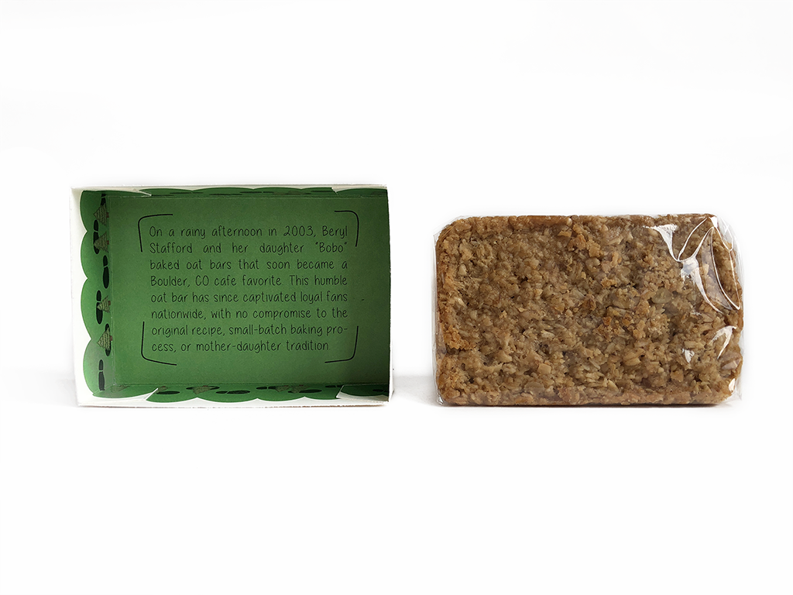
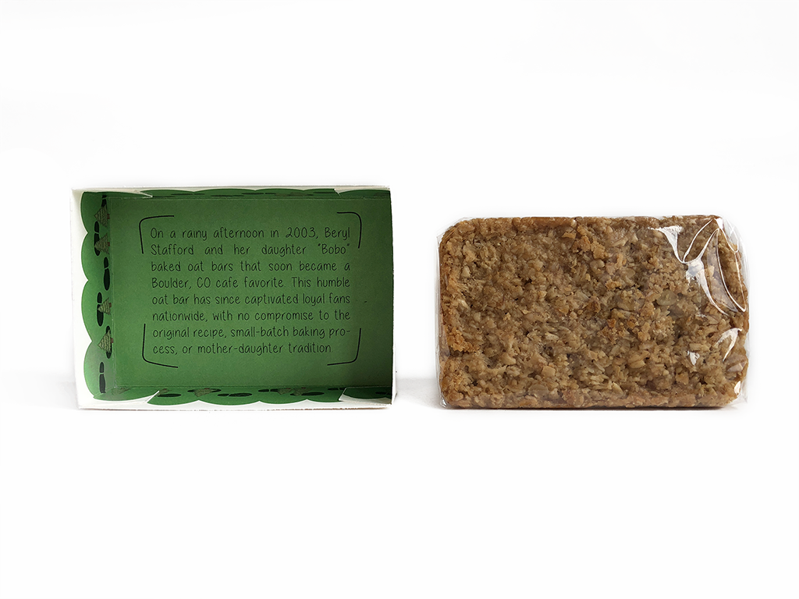

For this assignment I chose a product I was fairly familiar with to rebrand and package more efficently. The snack is not well known amongst the audience it's geared towards, and my goal was to shift the product toward a more suitable group.
Bobo's Oat Bars was founded by Beryl Stafford and her daughter "Bobo" in Boulder, Colorado. The pair enjoyed baking oat bars in their home kitchen, and decided to sell the treat at a local cafe. The oat bar soon became a favorite and has spread to audiences nationwide. Bobo's is a gluten-free, vegan, and GMO-free snack that's sold in nearly every grocery store. It's geared toward a family audience, the story of how Bobo's came to be written on the back of each plastic package.

 
